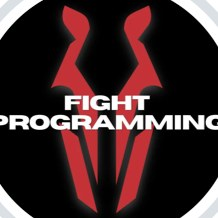
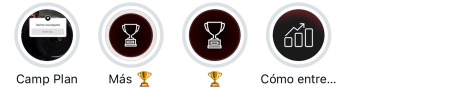
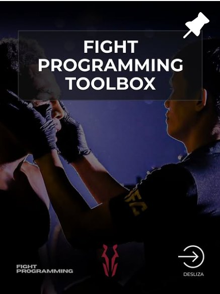
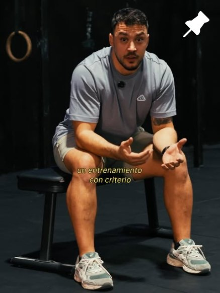

<title>Carlos Perfil</title>
<meta name="claude:viewport-fit-sides" content="cover">
<link rel="preconnect" href="https://fonts.googleapis.com">
<link rel="preconnect" href="https://fonts.gstatic.com" crossorigin>
<link rel="stylesheet" href="https://fonts.googleapis.com/css2?family=Bebas+Neue&family=Inter:wght@400;500;600;700;800&family=JetBrains+Mono:wght@500&display=swap">
<style>
:root {
  --bg: #0b0b0c; --panel: #151517; --panel2: #1e1e21; --line: #2e2e33; --ink: #f4f2ef; --soft: #aaa6a1;
  --red: #d42a30; --red-text: #ff6e72; --red-soft: #2e1214; --amber: #f0c060; --green: #66c486;
  --f-head: "Bebas Neue", "Arial Narrow", Arial, sans-serif; --f-body: "Inter", "Helvetica Neue", Arial, sans-serif; --f-mono: "JetBrains Mono", ui-monospace, Menlo, monospace;
  color-scheme: dark;
}
* { box-sizing: border-box; }
[hidden] { display: none !important; }
html { -webkit-text-size-adjust: 100%; }
body { margin: 0; background: var(--bg); color: var(--ink); font: 400 15.5px/1.55 var(--f-body); -webkit-font-smoothing: antialiased; overflow-wrap: break-word; }
body::before { content: ""; position: fixed; inset: 0 0 auto; height: env(safe-area-inset-top, 0px); z-index: 30; background: var(--bg); }
.wrap { max-width: 1180px; margin: 0 auto; padding-left: max(16px, env(safe-area-inset-left, 0px)); padding-right: max(16px, env(safe-area-inset-right, 0px)); }
h1, h2, h3, h4 { margin: 0; text-wrap: balance; }
h1 { font: 400 clamp(36px, 6vw, 64px)/.98 var(--f-head); letter-spacing: .01em; }
h2 { font: 400 clamp(26px, 3.4vw, 36px)/1.05 var(--f-head); letter-spacing: .01em; }
h3 { font: 700 16.5px/1.3 var(--f-body); }
h4 { font: 700 14.5px/1.3 var(--f-body); color: var(--red-text); }
p { margin: 0; }
a { color: var(--red-text); }
em { font-style: normal; color: var(--red-text); }
code { font: 500 13px/1.4 var(--f-mono); background: var(--panel2); padding: 2px 6px; border-radius: 6px; overflow-wrap: anywhere; }
.label { font: 500 11px/1.3 var(--f-mono); letter-spacing: .12em; text-transform: uppercase; color: var(--red-text); }
.soft { color: var(--soft); }
.ph { color: var(--amber); font-weight: 700; }
.hero { padding: calc(28px + env(safe-area-inset-top, 0px)) 0 22px; border-bottom: 1px solid var(--line); background: radial-gradient(120% 140% at 100% 0%, #3a0d10 0%, transparent 55%); }
.hero .wrap { display: grid; gap: 12px; }
.hero p.lead { font-size: 17px; max-width: 760px; color: #d9d5d0; }
.tabs-bar { position: sticky; top: env(safe-area-inset-top, 0px); z-index: 20; background: rgba(11, 11, 12, .94); backdrop-filter: blur(8px); -webkit-backdrop-filter: blur(8px); border-bottom: 1px solid var(--line); }
.tabs { display: flex; gap: 6px; overflow-x: auto; padding-block: 10px; scrollbar-width: none; }
.tabs::-webkit-scrollbar { display: none; }
.tab { all: unset; cursor: pointer; white-space: nowrap; padding: 9px 14px; border-radius: 999px; font-weight: 700; font-size: 14px; background: var(--panel); color: var(--soft); }
.tab[aria-selected="true"] { background: var(--red); color: #fff; }
.tab:focus-visible, .btn:focus-visible, .cp:focus-visible, .chip:focus-visible { outline: 3px solid var(--ink); outline-offset: 2px; }
main { padding-block: 24px 70px; }
.view { display: grid; gap: 22px; }
.sec { display: grid; gap: 14px; }
.sec > .head { display: grid; gap: 6px; max-width: 820px; }
.card { background: var(--panel); border: 1px solid var(--line); border-radius: 16px; padding: 16px 18px; display: grid; gap: 10px; align-content: start; min-width: 0; }
.card.acc { background: var(--red-soft); border-color: #5a1e22; }
.card.red { background: var(--red); border-color: var(--red); color: #fff; }
.card.red .label, .card.red .soft { color: #ffe1e2; }
.card.flat { background: var(--panel2); }
.g2 { display: grid; grid-template-columns: repeat(2, minmax(0, 1fr)); gap: 12px; }
.g3 { display: grid; grid-template-columns: repeat(3, minmax(0, 1fr)); gap: 12px; }
.g4 { display: grid; grid-template-columns: repeat(4, minmax(0, 1fr)); gap: 12px; }
ul.l, ol.l { margin: 0; padding-left: 20px; display: grid; gap: 6px; color: #d6d2cd; }
ul.l b, ol.l b { color: var(--ink); }
.say { position: relative; background: var(--panel2); border-left: 3px solid var(--red); border-radius: 10px; padding: 10px 12px; font-size: 14.5px; white-space: pre-line; color: #ece9e5; }
.say .cp { float: right; margin: -2px -4px 6px 10px; }
.cp, .btn { all: unset; box-sizing: border-box; cursor: pointer; font: 700 12px/1 var(--f-body); padding: 8px 11px; border-radius: 999px; background: var(--panel); color: var(--ink); border: 1px solid var(--line); white-space: nowrap; }
.cp.ok { background: var(--green); color: #08110b; border-color: var(--green); }
.btn { font-size: 14px; padding: 12px 18px; background: var(--red); border-color: var(--red); color: #fff; }
.btn.ghost { background: transparent; color: var(--ink); border-color: var(--line); }
.chips { display: flex; flex-wrap: wrap; gap: 6px; }
.chip { all: unset; cursor: pointer; font: 700 13px/1 var(--f-body); padding: 9px 12px; border-radius: 999px; background: var(--panel); border: 1px solid var(--line); color: var(--soft); }
.chip[aria-pressed="true"] { background: var(--ink); color: var(--bg); border-color: var(--ink); }
.tag { display: inline-block; width: fit-content; font: 500 10.5px/1 var(--f-mono); letter-spacing: .06em; text-transform: uppercase; padding: 5px 7px; border-radius: 4px; background: var(--red-soft); color: var(--red-text); }
.tw { overflow-x: auto; border-radius: 12px; border: 1px solid var(--line); }
table.t { width: 100%; border-collapse: collapse; font-size: 14px; min-width: 520px; }
table.t th { text-align: left; font: 500 11px/1.3 var(--f-mono); letter-spacing: .06em; text-transform: uppercase; color: var(--soft); background: var(--panel2); padding: 9px 10px; }
table.t td { padding: 9px 10px; border-top: 1px solid var(--line); vertical-align: top; }
table.t td.n, table.t th.n { text-align: right; font-variant-numeric: tabular-nums; white-space: nowrap; }
.big { font: 400 40px/1 var(--f-head); color: var(--red-text); font-variant-numeric: tabular-nums; }
.card.red .big { color: #fff; }
.nm { background: var(--panel); border: 1px solid #5a1e22; border-radius: 16px; padding: 16px 18px; display: grid; gap: 8px; }
.nm .nm-big { font-size: 18px; font-weight: 700; line-height: 1.4; }
.note { border: 1.5px dashed var(--line); border-radius: 12px; padding: 12px 14px; font-size: 14px; color: var(--soft); display: grid; gap: 6px; }
details.more > summary { cursor: pointer; font-weight: 700; list-style: none; color: var(--red-text); }
details.more > summary::-webkit-details-marker { display: none; }
input, select, textarea { font: 500 14.5px/1.3 var(--f-body); padding: 10px 11px; border: 1px solid var(--line); border-radius: 10px; background: var(--panel2); color: var(--ink); width: 100%; min-width: 0; }
textarea { resize: vertical; min-height: 70px; }
input:focus, select:focus, textarea:focus { outline: 2px solid var(--red); outline-offset: 1px; }
label.f { display: grid; gap: 5px; font-size: 12.5px; font-weight: 700; color: var(--soft); min-width: 0; }
img { max-width: 100%; display: block; }
.shot { border-radius: 12px; border: 1px solid var(--line); width: 100%; height: auto; }
.foot { color: var(--soft); font-size: 13px; padding-top: 18px; border-top: 1px solid var(--line); }
@media (max-width: 900px) { .g4 { grid-template-columns: repeat(2, minmax(0, 1fr)); } .g3 { grid-template-columns: 1fr 1fr; } }
@media (max-width: 620px) { .g2, .g3 { grid-template-columns: 1fr; } .card { padding: 14px; } body { font-size: 15px; } }
@media (max-width: 400px) { .g4 { grid-template-columns: 1fr 1fr; } }
</style>
<style>
.prof { display: grid; grid-template-columns: 74px minmax(0, 1fr); gap: 14px; align-items: center; }
.prof img { width: 74px; height: 74px; border-radius: 50%; border: 2px solid var(--line); }
.bio { display: grid; gap: 8px; }
.bio .say { font-size: 15px; }
.cnt { font: 500 11px/1 var(--f-mono); color: var(--green); }
.cnt.bad { color: var(--red-text); }
.hl { display: grid; grid-template-columns: 54px minmax(0, 1fr); gap: 12px; align-items: start; }
.hl i { width: 54px; height: 54px; border-radius: 50%; border: 2px solid var(--red); display: grid; place-items: center; font: 400 15px/1 var(--f-head); font-style: normal; color: var(--red-text); background: var(--panel2); text-align: center; }
</style>
<header class="hero"><div class="wrap">
  <span class="label">Carlos Jimena · Fight Programming · Parte 1 · Perfil</span>
  <h1>Que se note quién eres <em>en 3 segundos</em></h1>
  <p class="lead">Preparas a gente que gana en PFL, WOW y Cage Warriors, y tu perfil dice "Entrenador Online de Rendimiento" con una etiqueta de "AI-generated". Eso se arregla esta semana. Aquí lo tienes todo listo para copiar.</p>
</div></header>
<nav class="tabs-bar" aria-label="Secciones"><div class="wrap tabs" role="tablist">
  <button class="tab" role="tab" data-v="hoy" aria-selected="true">Lo que hay hoy</button>
  <button class="tab" role="tab" data-v="cuentas" aria-selected="false">Dos cuentas</button>
  <button class="tab" role="tab" data-v="bios" aria-selected="false">Nombre y bio</button>
  <button class="tab" role="tab" data-v="dest" aria-selected="false">Destacadas y fijados</button>
  <button class="tab" role="tab" data-v="check" aria-selected="false">Checklist</button>
</div></nav>
<main class="wrap">

<section class="view" id="v-hoy">
  <div class="nm"><span class="label">Tu nicho en una frase (igual en todas las partes)</span>
    <p class="nm-big">Preparación física para luchadores amateur de MMA y grappling, de 18 a 27 años, que compaginan el deporte con trabajo o estudios: rinde más el día del combate sabiendo qué, cuándo, cuánto y por qué entrenas.</p>
    <p class="soft"><b>Método Fight Programming:</b> criterio (qué, cuándo, cuánto y por qué) · la semana del que trabaja (2 días de fuerza + 1 de cardio, accesoria y pliometría) · fatiga y lesiones bajo control. Fases: base → campamento → fight week.</p>
  </div>
  <div class="g2">
    <article class="card">
      <div class="prof"><div><span class="label">@carlosjimena90</span><h3>3.565 seguidores · 624 posts · sigues a 1.724</h3></div></div>
      
      <ul class="l">
        <li><b>"AI-generated profile"</b> debajo de tu nombre. A un chaval que duda si fiarse, eso le dice que detrás no hay nadie. <b>Fuera hoy.</b></li>
        <li><b>"Entrenador Online de Rendimiento"</b> no dice de qué deporte. Nadie busca eso.</li>
        <li>La bio habla de ti (papá, founder, estilo de vida) y no de lo que consigue el luchador.</li>
        <li><b>3 enlaces</b> y el primero manda a registrarse en la app. Antes de hablar contigo, a nadie le toca registrarse en nada.</li>
        <li>Destacadas <b>APEX Hybrid</b> y <b>Prg. Híbrido</b>: no son para luchadores. Mezclan.</li>
        <li>Sigues a 1.724: limpia hasta quedarte por debajo de los que te siguen a ti.</li>
      </ul>
    </article>
    <article class="card">
      <div class="prof"><div><span class="label">@fight.programming</span><h3>2.915 seguidores · 487 posts · Lab con 269</h3></div></div>
      
      <ul class="l">
        <li><b>Lo mejor que tienes:</b> "Mis luchadores son atletas y lo demuestran" + WOW, PFL, Cage Warriors, ADCC, IBJJF. Esto se queda.</li>
        <li><b>"Strenght"</b> está mal escrito (es "Strength"). Y en inglés: tu cliente busca en español.</li>
        <li>"Somos una referencia" lo dice cualquiera. Lo que convence son los nombres y los combates.</li>
        <li>El enlace es <b>wa.me directo</b>: bien para hablar, mal para filtrar. Te escriben "¿cuánto vale?" y te dejan en visto.</li>
        <li>Dos destacadas con trofeo ("Más 🏆" y "🏆"): júntalas en una.</li>
        <li>Fijados <b>Toolbox</b> y <b>Pre-camp to fight day</b>: buenos. Falta uno: tu mejor reacción a un atleta.</li>
        <li>Colaborador oficial de BRAVE el 28 de noviembre: eso es contenido de fight week servido. <span class="ph">[CARLOS: ¿tienes atletas en ese cartel?]</span></li>
      </ul>
    </article>
  </div>
  <div class="card acc"><span class="label">Dicho claro</span><p>Tu autoridad existe dentro del sector. Fuera no, porque el perfil no la cuenta. Las dos cuentas juntas tienen más de 1.100 publicaciones y alguien que entra hoy no sabe qué haces, cómo trabajas ni por qué eres bueno. El perfil tiene que contestar eso antes de que te pregunten el precio.</p></div>
</section>

<section class="view" id="v-cuentas" hidden>
  <div class="sec"><div class="head"><span class="label">Lo que ya te dijo Alberto en "Lo primero"</span><h2>Una cuenta vende. <em>La otra pone la cara.</em></h2><p class="soft">La serie de reacciones vive en una sola cuenta. La recomendación es Fight Programming, porque ahí el mensaje ya está clarísimo. La personal no se cierra: se usa para enseñar lo tuyo, pero el trabajo va a la principal.</p></div>
    <div class="g2">
      <article class="card acc"><span class="label">@fight.programming · la principal</span><h3>Aquí se vende</h3><ul class="l">
        <li><b>Qué publica:</b> las 4 líneas completas. Reacciones a tus atletas (40 %), método (25 %), contra el sector (20 %), día a día (15 %).</li>
        <li><b>Qué vende:</b> Fight Programming 1:1 y Fight Camp. Nada más.</li>
        <li><b>Enlace:</b> la landing con la aplicación.</li>
        <li><b>Destacadas:</b> Atletas · Testimonios · Cómo trabajo · Camps · Aplica.</li>
        <li><b>Lab (269):</b> lo reactivas como canal de avisos: cada reacción nueva, cada fight week, plazas de camp.</li>
      </ul></article>
      <article class="card"><span class="label">@carlosjimena90 · la cara</span><h3>Aquí eres Carlos</h3><ul class="l">
        <li><b>Qué publica:</b> colabs de las piezas de FP (mismo post en las dos, sin duplicar trabajo), historias de tu día a día, quién eres y por qué haces esto.</li>
        <li><b>Qué vende:</b> nada directo. Todo apunta a @fight.programming.</li>
        <li><b>APEX Hybrid / APEX Health:</b> fuera de esta cuenta mientras construyes lo de luchadores. Si tienes clientes híbridos, los sigues atendiendo; solo dejas de anunciarlo. <span class="ph">[CARLOS: ¿cuántos clientes son APEX y qué pagan?]</span></li>
        <li><b>Enlace:</b> el mismo de la landing.</li>
      </ul></article>
    </div>
    <div class="note"><b>Truco para no duplicar trabajo:</b> publica en FP e invita a @carlosjimena90 como colaborador. Sale en los dos perfiles, los likes y comentarios suman en uno y no tienes que subir nada dos veces.</div>
  </div>
</section>

<section class="view" id="v-bios" hidden>
  <div class="sec"><div class="head"><span class="label">Primero lo urgente</span><h2>Quitar <em>"AI-generated profile"</em></h2></div>
    <div class="card"><ol class="l">
      <li>Perfil → <b>Editar perfil</b>. Busca la parte de categoría y etiquetas que se muestran en el perfil.</li>
      <li>Si sale "AI-generated" o una etiqueta de IA activada, quítala. Si no te deja, desactiva <b>mostrar categoría</b> y deja solo "Atleta" o "Entrenador personal".</li>
      <li>Si no la ves ahí, mira en <b>Configuración → Cuenta</b> y busca lo relacionado con IA. <span class="ph">[CARLOS: dime dónde estaba, para dejarlo apuntado]</span></li>
      <li>Comprueba desde otro móvil sin tu sesión que ya no aparece.</li>
    </ol></div>
  </div>
  <div class="sec"><div class="head"><span class="label">Nombre (el campo que busca Instagram)</span><h2>Que te encuentren buscando <em>"preparador físico MMA"</em></h2><p class="soft">El nombre cuenta para el buscador; la bio no. Usa palabras que escribe tu cliente.</p></div>
    <div class="g2">
      <div class="card"><span class="label">@carlosjimena90</span>
        <p class="say">Carlos Jimena | Preparador físico MMA</p>
        <p class="say">Carlos Jimena · Preparación física luchadores</p>
      </div>
      <div class="card"><span class="label">@fight.programming</span>
        <p class="say">Fight Programming | Preparación física MMA y BJJ</p>
        <p class="say">Fight Programming · Físico para luchadores</p>
      </div>
    </div>
  </div>
  <div class="sec"><div class="head"><span class="label">10 bios · contadas (máximo 150)</span><h2>Que suene a ti, <em>no a una IA</em></h2><p class="soft">Frases cortas, de gimnasio, de aquí. Sin "transformo vidas", sin "lleva tu rendimiento al siguiente nivel". Elige una de cada cuenta y cámbiale lo que no dirías tú en voz alta.</p></div>
    <div class="g2">
      <div class="card bio"><span class="label">@fight.programming · la que vende</span>
        <p class="say">Preparación física para luchadores amateur de MMA y grappling
Atletas con victorias en PFL, WOW y Cage Warriors
👇 Aplica: Fight Camp o 1:1</p>
        <p class="say">Físico para luchadores que entrenan, curran y compiten
Nivel ADCC e IBJJF · victorias en PFL y Cage Warriors
Desde Málaga, online 👇</p>
        <p class="say">Mis luchadores son atletas y lo demuestran
MMA y grappling: qué, cuándo, cuánto y por qué
PFL · WOW · Cage Warriors · ADCC · IBJJF
👇 Aplica</p>
        <p class="say">Rinde más el día del combate
Preparación física online para luchadores amateur
Atletas en PFL, WOW y Cage Warriors
Málaga 👇 Aplica</p>
        <p class="say">Te preparo el campamento hasta el día del combate
MMA y grappling · Málaga y online
Cansancio no es entrenamiento
👇 Aplica</p>
      </div>
      <div class="card bio"><span class="label">@carlosjimena90 · la cara</span>
        <p class="say">Malagueño. Preparo el físico de luchadores
Atletas con victorias en PFL, WOW y Cage Warriors
Aquí, el día a día. El método 👉 @fight.programming</p>
        <p class="say">Preparador físico de MMA y grappling · Málaga
Nada de ejercicios milagro: qué, cuándo, cuánto y por qué
Mi equipo 👉 @fight.programming</p>
        <p class="say">De Málaga, entre tatamis y jaulas
Preparo a luchadores que curran o estudian y quieren rendir más
👇 Aplica aquí</p>
        <p class="say">Preparo luchadores. Del gimnasio a la esquina
MMA y grappling · Málaga y online
Si no te explico el porqué, no te estoy preparando</p>
        <p class="say">Carlos, preparador físico de luchadores · Málaga
Pesajes, esquinas y campamentos: lo cuento aquí
El trabajo, en @fight.programming</p>
      </div>
    </div>
    <div class="note"><b>"Papá de Einar":</b> es tuyo y humaniza. Si lo quieres mantener, que sea solo en la personal y sustituyendo una línea, no sumando. En la de FP, nada personal. <b>Ojo con "Top 5 WBC & EBU":</b> no está en lo que me pasó Alberto. Si es verdad y tienes permiso para contarlo, se puede añadir. <span class="ph">[CARLOS: confirmar qué atleta y qué ranking]</span></div>
  </div>
  <div class="sec"><div class="head"><span class="label">Enlace</span><h2>Un solo enlace: <em>la aplicación</em></h2></div>
    <div class="g2">
      <div class="card"><ul class="l">
        <li><b>Fuera</b> train.strivee.app de la bio. La app es para después de pagar, no para el primer contacto.</li>
        <li><b>Fuera</b> "and 2 more". Un enlace: la landing de Fight Programming con la aplicación (index.html publicada).</li>
        <li>El WhatsApp (wa.me) se queda <b>dentro</b> de la landing, como último paso tras aplicar.</li>
        <li>El mismo enlace en las dos cuentas.</li>
      </ul></div>
      <div class="card flat"><span class="label">Texto del botón de enlace</span><p class="say">Aplica a Fight Programming</p><p class="say">Aplica a tu camp</p></div>
    </div>
  </div>
</section>

<section class="view" id="v-dest" hidden>
  <div class="sec"><div class="head"><span class="label">@fight.programming</span><h2>Destacadas: <em>prueba primero</em></h2><p class="soft">Hoy: Camp Plan · Más 🏆 · 🏆 · Cómo entreno. Propuesta, en este orden:</p></div>
    
    <div class="g2">
      <div class="card hl"><i>ATL</i><div><h3>Atletas</h3><p class="soft">Una historia por atleta con nombre y permiso (Mouzid, Bussolotti, Giordano, Gil, Baldo Mira, Samuel Molina, Cristian y Joel Amador): su disciplina, su evento y la reacción que le hiciste. Junta aquí "Más 🏆" y "🏆".</p></div></div>
      <div class="card hl"><i>TES</i><div><h3>Testimonios</h3><p class="soft">Capturas de mensajes (con permiso), vídeo testimonios y comparativas de rendimiento antes/después. Se llena con el sistema de la Parte 3 (pestaña Prueba).</p></div></div>
      <div class="card hl"><i>MÉT</i><div><h3>Cómo trabajo</h3><p class="soft">Renombra "Cómo entreno". 5 historias: qué, cuándo, cuánto y por qué · la semana del que trabaja · fight week por contraste · fatiga y lesiones · cómo es la app y la revisión de vídeos.</p></div></div>
      <div class="card hl"><i>CAMP</i><div><h3>Camps</h3><p class="soft">Lo que hoy es "Camp Plan" + el fijado "Pre-camp to fight day": cómo es un campamento contigo semana a semana hasta el pesaje.</p></div></div>
      <div class="card hl"><i>APL</i><div><h3>Aplica</h3><p class="soft">3 historias: para quién es (amateur que compite y curra o estudia), qué pasa cuando aplicas (te escribo, hablamos, llamada) y el enlace. Sin precio.</p></div></div>
    </div>
  </div>
  <div class="sec"><div class="head"><span class="label">@carlosjimena90</span><h2>Destacadas de <em>la cara</em></h2></div>
    
    <div class="g3">
      <div class="card"><h3>Quién soy</h3><p class="soft">Málaga, por qué preparas luchadores, qué te saca de quicio del sector.</p></div>
      <div class="card"><h3>Día a día</h3><p class="soft">Pesajes, esquina, vestuario, campamentos. Sin lección.</p></div>
      <div class="card"><h3>Fight Programming</h3><p class="soft">Una sola historia que manda a @fight.programming.</p></div>
    </div>
    <p class="soft">"Online Training" (APEX) y "Prg. Híbrido" se archivan, no se borran.</p>
  </div>
  <div class="sec"><div class="head"><span class="label">Fijados</span><h2>Lo primero que ve <em>alguien nuevo</em></h2></div>
    <div class="g3">
      <div class="card"><h3>FP · 1. Pre-camp to fight day</h3><p class="soft">Se queda. Es tu método en carrusel.</p></div>
      <div class="card"><h3>FP · 2. Toolbox → cambiar</h3><p class="soft">En cuanto tengas tu primera reacción con más alcance, la fijas aquí. La prueba va antes que las herramientas.</p></div>
      <div class="card"><h3>FP · 3. "La semana del que trabaja"</h3><p class="soft">Carrusel de valor: 2 días de fuerza + 1 de cardio, accesoria y pliometría alrededor de 5 días de tatami. Explica el porqué de cada bloque.</p></div>
    </div>
    <div class="g3">
      <div class="card"><h3>Personal · 1. Quién soy</h3><p class="soft">Reel a cámara de 45 s: de dónde eres, qué haces, a quién preparas, dónde está el trabajo (@fight.programming).</p></div>
      <div class="card"><h3>Personal · 2. "Un entrenamiento con criterio"</h3><p class="soft">Ya lo tienes fijado. Se queda: es tu mensaje.</p></div>
      <div class="card"><h3>Personal · 3. Un día de esquina</h3><p class="soft">Lo que nadie más puede grabar. <span class="ph">[CARLOS: el próximo pesaje o evento]</span></p></div>
    </div>
  </div>
</section>

<section class="view" id="v-check" hidden>
  <div class="g2">
    <div class="card"><span class="label">Esta semana · en este orden</span><ol class="l">
      <li>Quitar "AI-generated profile".</li>
      <li>Decidir la cuenta principal (recomendación: FP) y decírselo a Alberto en el reporte del domingo.</li>
      <li>Cambiar los dos nombres (copiar de la pestaña anterior).</li>
      <li>Cambiar las dos bios.</li>
      <li>Un enlace, el de la aplicación, en las dos.</li>
      <li>Corregir "Strenght".</li>
      <li>Destacadas: juntar trofeos en "Atletas", renombrar "Cómo trabajo", archivar APEX.</li>
      <li>Dejar de seguir cuentas que no aportan hasta bajar de 1.000 en la personal.</li>
      <li>Avisar en el Lab (269) de que vuelve la serie de reacciones.</li>
    </ol></div>
    <div class="card"><span class="label">Para confirmar</span><ul class="l">
      <li><span class="ph">[CARLOS: confirmar]</span> Dónde se activó la etiqueta "AI-generated".</li>
      <li><span class="ph">[CARLOS: confirmar]</span> Qué es "Top 5 WBC & EBU": atleta, ranking y permiso.</li>
      <li><span class="ph">[CARLOS: confirmar]</span> Qué son exactamente APEX Hybrid y APEX Health, y cuántos clientes tienen.</li>
      <li><span class="ph">[CARLOS: confirmar]</span> Qué atletas tuyos pelean en BRAVE el 28 de noviembre.</li>
      <li><span class="ph">[CARLOS: confirmar]</span> Que los 8 atletas siguen dando permiso para nombrarlos en la bio y en la landing.</li>
    </ul></div>
  </div>
  <p class="foot">Material de mentoría de Alberto González para Carlos Jimena. Nada de esta página se publica tal cual: todo lo que va entre [corchetes] lo completas tú.</p>
</section>
</main>
<script>
document.querySelectorAll(".bio .say").forEach(function (p) {
  var n = p.textContent.trim().length, s = document.createElement("span");
  s.className = "cnt" + (n > 150 ? " bad" : ""); s.textContent = n + " / 150 caracteres";
  p.insertAdjacentElement("afterend", s);
});
</script>

<script>
(function () {
  function copyText(t, b) {
    function ok() { var o = b.textContent; b.textContent = "Copiado"; b.classList.add("ok"); setTimeout(function () { b.textContent = o; b.classList.remove("ok"); }, 1400); }
    function fb() { var ta = document.createElement("textarea"); ta.value = t; ta.style.position = "fixed"; ta.style.opacity = "0"; document.body.appendChild(ta); ta.select(); try { document.execCommand("copy"); ok(); } catch (e) { b.textContent = "Selecciona y copia"; } document.body.removeChild(ta); }
    if (navigator.clipboard && navigator.clipboard.writeText) navigator.clipboard.writeText(t).then(ok, fb); else fb();
  }
  window.cjCopy = copyText;
  window.cjSay = function (root) {
    (root || document).querySelectorAll(".say:not([data-cp]):not(.nocp)").forEach(function (p) {
      p.setAttribute("data-cp", "1");
      var txt = p.textContent.trim();
      var b = document.createElement("button"); b.type = "button"; b.className = "cp"; b.textContent = "Copiar";
      b.addEventListener("click", function () { copyText(txt, b); });
      p.insertBefore(b, p.firstChild);
    });
  };
  window.cjSay();
  document.querySelectorAll("[data-copy]").forEach(function (b) {
    b.addEventListener("click", function () { var el = document.getElementById(b.dataset.copy); if (el) copyText((el.value != null && el.tagName !== "PRE" ? el.value : el.textContent).trim(), b); });
  });
  var tabs = document.querySelectorAll(".tab[data-v]");
  function show(v, push) {
    tabs.forEach(function (t) { t.setAttribute("aria-selected", t.dataset.v === v ? "true" : "false"); });
    document.querySelectorAll("main > .view").forEach(function (s) { s.hidden = s.id !== "v-" + v; });
    if (push) { try { history.replaceState(null, "", "#" + v); } catch (e) {} window.scrollTo(0, 0); }
  }
  tabs.forEach(function (t) { t.addEventListener("click", function () { show(t.dataset.v, true); }); });
  if (tabs.length) { var h = (location.hash || "").slice(1); show(document.getElementById("v-" + h) ? h : tabs[0].dataset.v, false); }
})();
</script>
